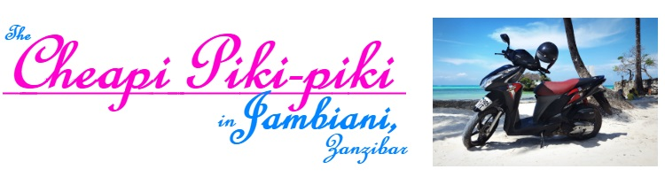

If you'd like to arrange a rental, please contact us at:
cheapipikipiki@gmail.com
or
+255 777 438 001
+255 776 848 442
We deliver right to your doorstep! Also, if you don't already have a driver's license for Zanzibar, you will need one. Let us know one day in advance, and we can get one for you in Stonetown. The government charges $10 for the license.